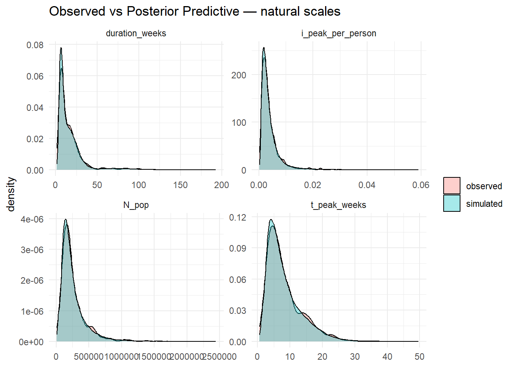
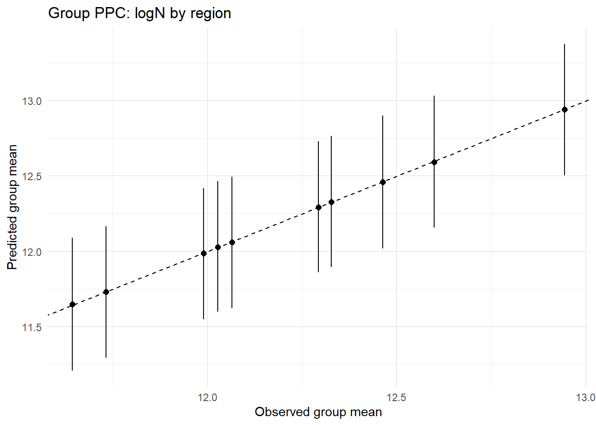
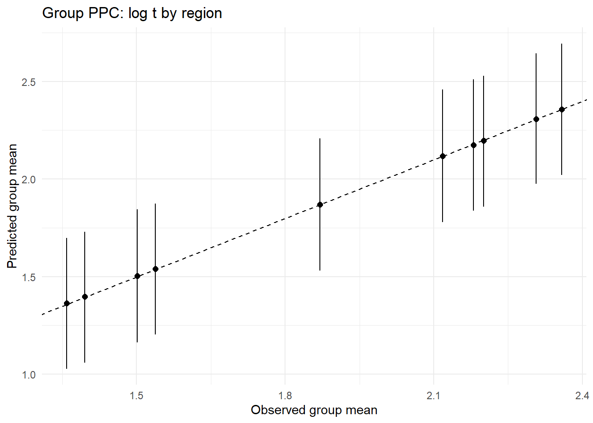
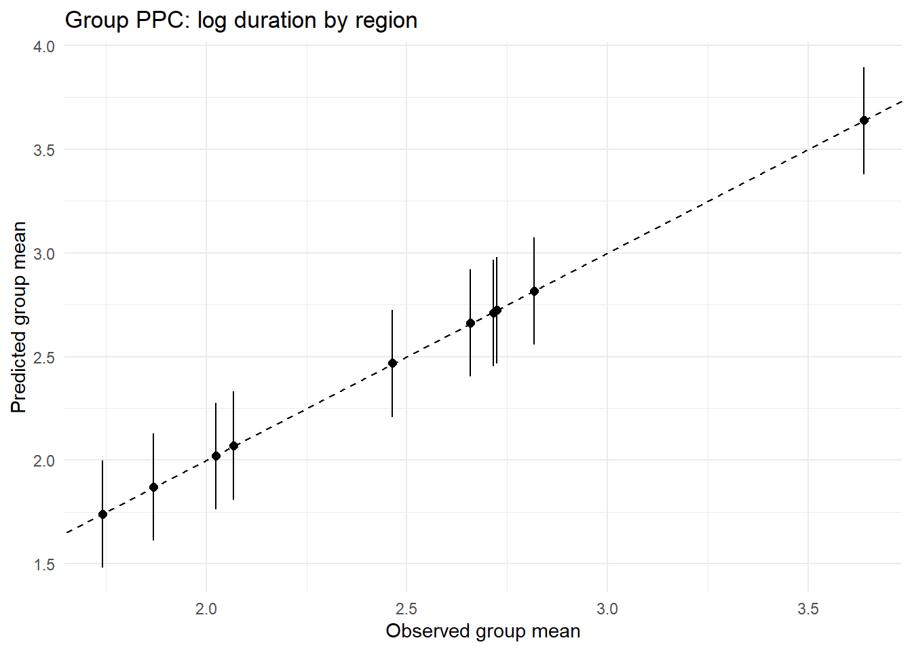
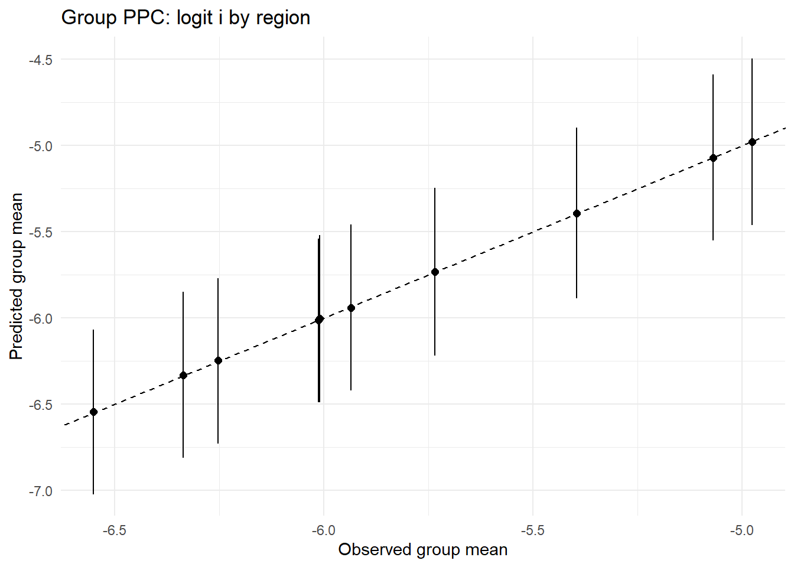
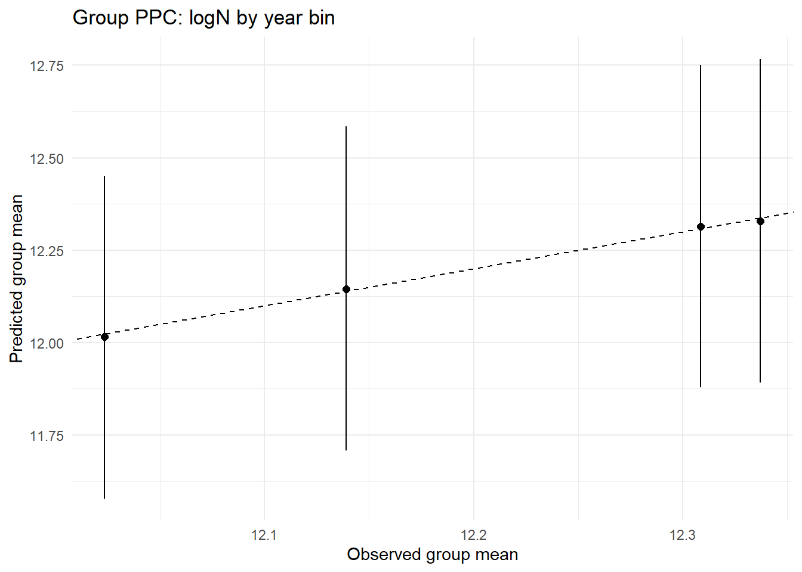
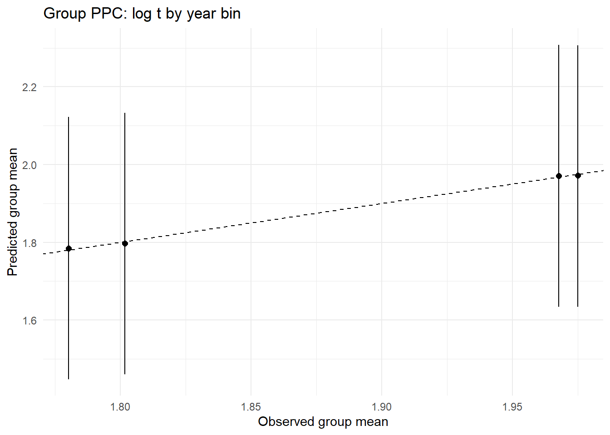
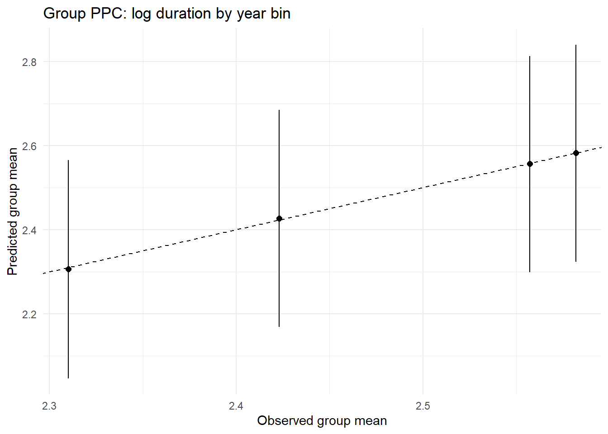
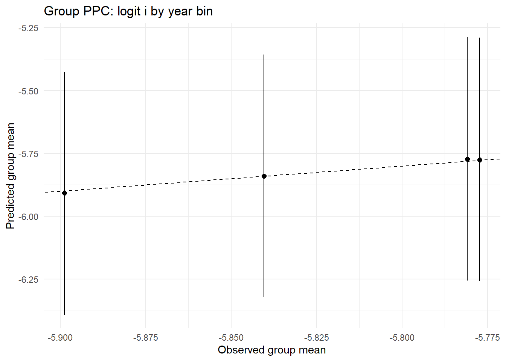

library(tidyverse)library(rstan)library(bayesplot)library(GGally)library(splines)rstan_options(auto_write =TRUE)options(mc.cores = parallel::detectCores())theme_set(bayesplot::theme_default())set.seed(2025)rmse <-function(x,y) sqrt(mean((x-y)^2))mae <-function(x,y) mean(abs(x-y))# NegBin2 sampler with mean mu and overdispersion phi (size = 1/phi)rnbinom_mu_phi <-function(n, mu, phi) { size <-1/phirnbinom(n, mu = mu, size = size)}
2 Generate Fake Historical Outbreaks
Code
R <-10# number of regionsC <-30# total number of countries (across all regions)# OPTION A: Balanced (≈ C/R countries per region)build_map_balanced <-function(R, C) { regs <-paste0("R", seq_len(R))# split C countries across R regions as evenly as possible sizes <-rep(floor(C / R), R) sizes[seq_len(C %% R)] <- sizes[seq_len(C %% R)] +1tibble(country =paste0("C", seq_len(C)),region =rep(regs, times = sizes) )}# OPTION B: Unbalanced (random allocation using Dirichlet weights)build_map_unbalanced <-function(R, C, conc =1) { regs <-paste0("R", seq_len(R)) w <-rgamma(R, shape = conc, rate =1) w <- w /sum(w) sizes <-as.integer(round(w * C))# fix rounding so sizes sum to Cwhile(sum(sizes) != C) { i <-sample(seq_len(R), 1) sizes[i] <- sizes[i] +sign(C -sum(sizes)) }tibble(country =paste0("C", seq_len(C)),region =rep(regs, times = sizes) )}# Choose one:# country_region_map <- build_map_unbalanced(R, C, conc = 0.7)country_region_map <-build_map_balanced(R, C)# sanity checksstopifnot(nrow(country_region_map) == C,all(!duplicated(country_region_map$country)))count(country_region_map, region, name ="n_countries")
Observed meta-parameters per outbreak \(n = 1,.., N\)
\(N_n\): population size; t_n: time to peak (weeks) \(D_n\): duration (weeks) \(i_n\): peak weekly incidence per person in \((0,1)\)\(y_n\): year \(r_n \in {1,...,R}\): region \(c_n \in {1,...,C}\): country (nested in region)
# expect cover80 ≈ 0.8 if intervals are well-calibrated# 5) natural-scale comparisons (histograms/densities)# transform reps to natural scalesinv_logit <-function(x) 1/(1+exp(-x))# pick a small set of draws to avoid memory blow-ups when back-transformingbt_idx <-seq_len(min(100, nrow(yrep_logN)))bt <-list(N_pop =exp(yrep_logN[bt_idx, , drop=FALSE]),t_weeks =exp(yrep_logt[bt_idx, , drop=FALSE]),D_weeks =exp(yrep_logD[bt_idx, , drop=FALSE]),i_peak =inv_logit(yrep_logi[bt_idx, , drop=FALSE]))obs_nat <-list(N_pop =exp(df$logN),t_weeks =exp(df$logt),D_weeks =exp(df$logD),i_peak =inv_logit(df$logit_i))dens_long <-function(mat, label) {tibble(value =as.vector(t(mat)), draw =rep(seq_len(nrow(mat)), each =ncol(mat))) %>%mutate(source ="simulated", var = label)}obs_long <-function(vec, label) tibble(value = vec, source ="observed", var = label)nat_df <-bind_rows(dens_long(bt$N_pop, "N_pop"),dens_long(bt$t_weeks, "t_peak_weeks"),dens_long(bt$D_weeks, "duration_weeks"),dens_long(bt$i_peak, "i_peak_per_person"),obs_long(obs_nat$N_pop, "N_pop"),obs_long(obs_nat$t_weeks, "t_peak_weeks"),obs_long(obs_nat$D_weeks, "duration_weeks"),obs_long(obs_nat$i_peak, "i_peak_per_person"))ggplot(nat_df, aes(value, fill = source)) +geom_density(alpha =0.35) +facet_wrap(~var, scales ="free") +labs(title ="Observed vs Posterior Predictive — natural scales", x =NULL, y ="density", fill =NULL) +theme_minimal()

Code
# 6) grouped PPCs (optional): by region or by coarse year bins# useful to spot misfit in subgroupsdf$year_bin <-cut(df$year, breaks =c(-Inf, 2005, 2010, 2015, Inf),labels =c("≤2005","2006–2010","2011–2015","≥2016"), right =TRUE)ppc_by_group <-function(yrep, yobs, group, title) {# compute groupwise observed vs predictive mean with intervals pred_mean <-colMeans(yrep) pred_lo <-apply(yrep, 2, quantile, 0.1) pred_hi <-apply(yrep, 2, quantile, 0.9)tibble(obs = yobs, mean = pred_mean, lo = pred_lo, hi = pred_hi, grp = group) %>%group_by(grp) %>%summarise(obs_mean =mean(obs),pred_mean =mean(mean),pred_lo =mean(lo),pred_hi =mean(hi),.groups ="drop" ) %>%ggplot(aes(x = obs_mean, y = pred_mean)) +geom_abline(slope =1, intercept =0, linetype =2) +geom_errorbar(aes(ymin = pred_lo, ymax = pred_hi), width =0) +geom_point(size =2) +labs(title = title, x ="Observed group mean", y ="Predicted group mean") +theme_minimal()}ppc_by_group(Yreps$logN, Yobs$logN, df$region, "Group PPC: logN by region")

Code
ppc_by_group(Yreps$logt, Yobs$logt, df$region, "Group PPC: log t by region")

Code
ppc_by_group(Yreps$logD, Yobs$logD, df$region, "Group PPC: log duration by region")

Code
ppc_by_group(Yreps$logiti, Yobs$logiti, df$region, "Group PPC: logit i by region")

Code
ppc_by_group(Yreps$logN, Yobs$logN, df$year_bin, "Group PPC: logN by year bin")

Code
ppc_by_group(Yreps$logt, Yobs$logt, df$year_bin, "Group PPC: log t by year bin")

Code
ppc_by_group(Yreps$logD, Yobs$logD, df$year_bin, "Group PPC: log duration by year bin")

Code
ppc_by_group(Yreps$logiti, Yobs$logiti, df$year_bin, "Group PPC: logit i by year bin")

6 Forward Simulation in Your Modeling Order
Code
# ---- store training specs to reproduce design rows at prediction time ----# helper: capture basis attributes + column means/sds used for scalingcapture_bs_spec <-function(B_train) {list(degree =attr(B_train, "degree"),knots =attr(B_train, "knots"),Boundary.knots =attr(B_train, "Boundary.knots"),mu =colMeans(as.matrix(B_train)),sd =apply(as.matrix(B_train), 2, sd) )}# safe scaling using training mu/sd (0-sd -> 1)scale_with <-function(M, mu, sd) { sd2 <- sd; sd2[!is.finite(sd2) | sd2 ==0] <-1sweep(sweep(as.matrix(M), 2, mu, "-"), 2, sd2, "/")}# rebuild a bs basis using training attributesbs_from_spec <-function(x_new, spec) {as.matrix(splines::bs(x_new,degree = spec$degree,knots = spec$knots,Boundary.knots = spec$Boundary.knots,intercept =FALSE))}# capture specs for the bases used in each equation (POST-cleaning, PRE-scaling)spec_year_N <-capture_bs_spec(B_year_N) # used in XN (after drop_bad, before scaling)spec_year_t <-capture_bs_spec(B_year_t) # used in Xtspec_year_D <-capture_bs_spec(B_year_D) # used in XDspec_year_I <-capture_bs_spec(B_year_I) # used in XI (year block)spec_logt <-capture_bs_spec(B_logt) # used in XI tensorspec_logD <-capture_bs_spec(B_logD) # used in XI tensor# tensor spec: store column means/sds AFTER building tensor on training# (we’ll rebuild the tensor from the two bases at prediction time, then scale with these)tensor_train <-tensor_kr(B_logt, B_logD)spec_tensor_tD <-list(mu =colMeans(tensor_train),sd =apply(tensor_train, 2, sd))# training means/sds for the centered “raw” covariates you used (x_logN, x_logt, x_logD)center_sd_cont <-list(logN =c(mu =mean(df$logN), sd =sd(df$logN)),logt =c(mu =mean(df$logt), sd =sd(df$logt)),logD =c(mu =mean(df$logD), sd =sd(df$logD)))
Code
# ---- extract posterior draws (arrays) ----ex <- rstan::extract(fit, permuted =TRUE)# fixed effectsbeta_N <- ex$beta_N # draws × pNbeta_t <- ex$beta_t # draws × ptbeta_D <- ex$beta_D # draws × pDbeta_I <- ex$beta_I # draws × pI# residual SDssigma_N <- ex$sigma_N # drawssigma_t <- ex$sigma_tsigma_D <- ex$sigma_Dsigma_I <- ex$sigma_I# random effects (from transformed parameters)# u_reg: draws × 4 × R; u_cty: draws × 4 × Cu_reg <- ex$u_regu_cty <- ex$u_ctyn_draws <-nrow(beta_N)stopifnot(n_draws >0)
Code
# --- utilities for capturing & rebuilding spline/tensor blocks ---# which columns to keep (finite & non-constant)keep_idx <-function(M) { M <-as.matrix(M)apply(M, 2, function(col) { ok <-all(is.finite(col)); v <-var(col) ok &&is.finite(v) && v >0 })}# build raw bs (with attributes intact) using *safe* dfsafe_df <-function(x, target_df, min_df =2) { nu <-length(unique(x))max(min_df, min(target_df, nu -1))}build_bs_raw <-function(x, target_df) { df_use <-safe_df(x, target_df) splines::bs(x, df = df_use, intercept =FALSE) # returns a "bs" object with attrs}# capture *full* spec: attrs + kept columns + scaling statscapture_bs_spec <-function(bs_obj) { M <-as.matrix(bs_obj) keep <-keep_idx(M)list(degree =attr(bs_obj, "degree"),knots =attr(bs_obj, "knots"),Boundary.knots =attr(bs_obj, "Boundary.knots"),keep = keep,mu =colMeans(M[, keep, drop =FALSE]),sd =apply(M[, keep, drop =FALSE], 2, sd) )}# rebuild a *raw* kept-column bs matrix for new x using the stored attrsbs_raw_from_spec <-function(x_new, spec) { B <- splines::bs(x_new,degree = spec$degree,knots = spec$knots,Boundary.knots = spec$Boundary.knots,intercept =FALSE)as.matrix(B)[, spec$keep, drop =FALSE]}# scale with stored training mu/sd (guard sd=0)scale_with <-function(M, mu, sd) { sd2 <- sd; sd2[!is.finite(sd2) | sd2 ==0] <-1sweep(sweep(as.matrix(M), 2, mu, "-"), 2, sd2, "/")}# column-wise Khatri–Rao producttensor_kr <-function(B1, B2) { out <-vector("list", ncol(B1))for (i inseq_len(ncol(B1))) out[[i]] <- B2 * B1[, i]do.call(cbind, out)}# capture tensor spec from two *raw* kept bases (unscaled)capture_tensor_spec <-function(B1_raw, B2_raw) { Traw <-tensor_kr(B1_raw, B2_raw) keep <-keep_idx(Traw)list(keep = keep,mu =colMeans(Traw[, keep, drop =FALSE]),sd =apply(Traw[, keep, drop =FALSE], 2, sd) )}# Rebuild & scale tensor for new (B1_raw_new, B2_raw_new)tensor_from_spec <-function(B1_raw_new, B2_raw_new, tens_spec) { Traw <-tensor_kr(B1_raw_new, B2_raw_new) Traw <- Traw[, tens_spec$keep, drop =FALSE]scale_with(Traw, tens_spec$mu, tens_spec$sd)}# ---- (RE)CAPTURE SPECS FROM YOUR TRAINING DATA ----# Build RAW bases (with attrs) *before* dropping cols/scalingB_year_N_raw <-build_bs_raw(df$year, 8)B_year_t_raw <-build_bs_raw(df$year, 8)B_year_D_raw <-build_bs_raw(df$year, 8)B_year_I_raw <-build_bs_raw(df$year, 8)B_logt_raw <-build_bs_raw(df$logt, 6)B_logD_raw <-build_bs_raw(df$logD, 6)# capture bs specsspec_year_N <-capture_bs_spec(B_year_N_raw)spec_year_t <-capture_bs_spec(B_year_t_raw)spec_year_D <-capture_bs_spec(B_year_D_raw)spec_year_I <-capture_bs_spec(B_year_I_raw)spec_logt <-capture_bs_spec(B_logt_raw)spec_logD <-capture_bs_spec(B_logD_raw)# capture tensor spec (built from *raw kept* bases)B_logt_keep_raw <-as.matrix(B_logt_raw)[, spec_logt$keep, drop =FALSE]B_logD_keep_raw <-as.matrix(B_logD_raw)[, spec_logD$keep, drop =FALSE]spec_tensor_tD <-capture_tensor_spec(B_logt_keep_raw, B_logD_keep_raw)# store training means/sds for raw covariates used as standardized scalarscenter_sd_cont <-list(logN =c(mu =mean(df$logN), sd =sd(df$logN)),logt =c(mu =mean(df$logt), sd =sd(df$logt)),logD =c(mu =mean(df$logD), sd =sd(df$logD)))
# 400 simulations for one stratumsim1 <-simulate_forward(n_sims =400, year =2015, region ="R2", country ="C5")# simulate with the empirical mix of (year, region, country) from your datakeys <- df %>%select(year, region, country) %>%slice_sample(n =1000, replace =TRUE)sim_meta <-simulate_forward(n_sims =nrow(keys),year = keys$year,region =as.character(keys$region),country =as.character(keys$country))
Quick visual check
Code
hist_summ <- df %>%# filter(year == 2015, region =="R2", country == "C5") %>% transmute(source ="historical",N_pop =exp(logN),t_peak_weeks =exp(logt),duration_weeks =exp(logD),i_peak_per_person =plogis(logit_i))# sim_summ <- sim1 %>% mutate(source = "simulated")sim_summ <- sim_meta %>%mutate(source ="simulated")bind_rows(hist_summ, sim_summ) %>%pivot_longer(c(N_pop, t_peak_weeks, duration_weeks, i_peak_per_person),names_to ="var", values_to ="value") %>%ggplot(aes(value, fill = source)) +geom_density(alpha =0.35) +facet_wrap(~var, scales ="free") +labs(title ="Historical vs Forward Simulated (matched stratum)",x =NULL, y ="density", fill =NULL)